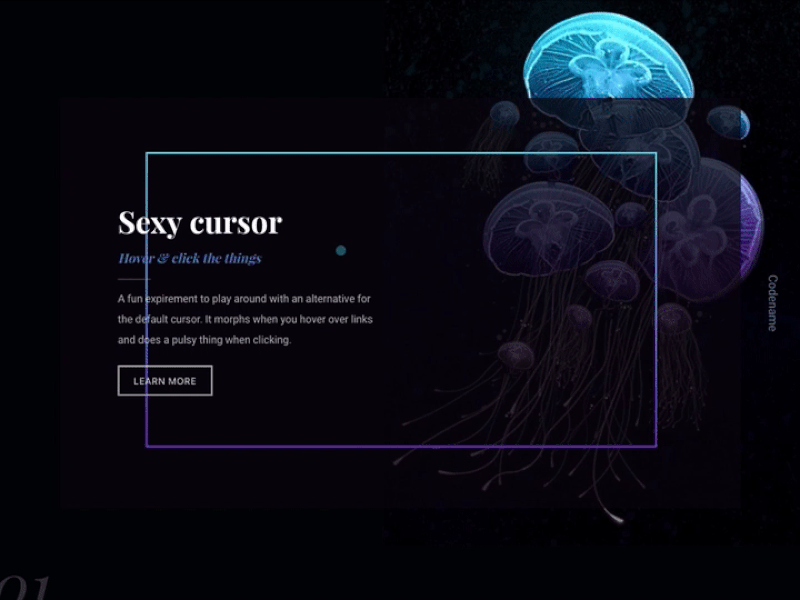
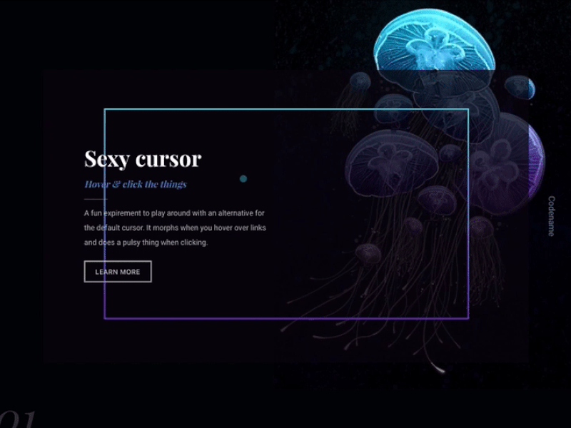

Codename is a series of weekly creative projects. Every week I tried to make a concept, design the interface and code the animations. The focus of each project is to implement an interaction I never made before and to gain experience with more interactive projects.
I started this series with something as simple as a cursor. It was suprising to see how much is possible with such a simple component. There were multiple projects made with cursors, but there is still so much to explore.
 


During this process I started expirementing with image layering. Below is an example of a man standing in a desert combined with images of clouds and water to create this wave-like animation.